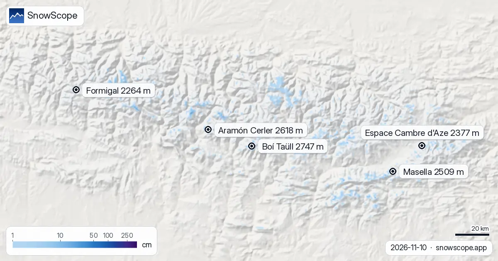

Nullgradgrenze in den Pyrenäen: von 2.420 m bis 3.710 m, Schneefallgrenze bis 3.400 m (10. November)
Die Nullgradgrenze in den Pyrenäen, nächste Tage: 2.420 m bis 3.710 m. Die Schneefallgrenze, etwa 300 m tiefer, erreicht ihren Höchstwert von 3.400 m in Masella am Dienstag, 10. November. Die Schneefallgrenze ist eine Prognose einer Prognose: Sie folgt der Nullgradgrenze, die sich um Hunderte Meter verschieben kann.
Die Live-Schneeprognose für Boí Taüll in der SnowScope-AppSchneehöhen, Pulverschnee-Alarme und 3D-Karte, gratis.
Die Nullgradgrenze, täglich
Die Nullgradgrenze über den Skigebieten unten, von der kältesten bis zur wärmsten Stunde jedes Tages: Dienstag, 10. November: von 2.910 m bis 3.710 m. Mittwoch, 11. November: von 2.740 m bis 3.370 m. Donnerstag, 12. November: von 2.580 m bis 3.280 m. Freitag, 13. November: von 2.420 m bis 2.730 m.
| Skigebiet | Schneehöhe | Neuschnee, 72 h | Erwartet, nächste Tage | Gipfel |
|---|---|---|---|---|
| Boí Taüll | 8 cm | 0 cm | 14 cm | 2.747 m |
| Aramón Cerler | 8 cm | 0 cm | 15 cm | 2.618 m |
| Masella | 11 cm | 0 cm | 1 cm | 2.509 m |
| Espace Cambre d'Aze | 10 cm | 0 cm | 1 cm | 2.377 m |
| Formigal | 2 cm | 0 cm | 7 cm | 2.264 m |

Schneefallgrenze nach Skigebiet
Boí Taüll (Tal 2.039 m, Gipfel 2.747 m): Schneefallgrenze etwa 3.200 m am 10. November, über dem Gipfel. Der ganze Berg liegt bei Niederschlag in der Regen-oder-Nassschnee-Zone.
Aramón Cerler, Tal 1.503 m, Gipfel 2.618 m: Schneefallgrenze bei 2.900 m am 10. November, über der Bergstation; Regen oder nasser Schnee überall, wenn etwas fällt.
Masella (Tal 1.615 m, Gipfel 2.509 m): Schneefallgrenze etwa 3.400 m am 10. November, über dem Gipfel. Der ganze Berg liegt bei Niederschlag in der Regen-oder-Nassschnee-Zone.
Espace Cambre d'Aze, Tal 1.631 m, Gipfel 2.377 m: Schneefallgrenze bei 3.400 m am 10. November, über der Bergstation; Regen oder nasser Schnee überall, wenn etwas fällt.
Formigal (Tal 1.502 m, Gipfel 2.264 m): Schneefallgrenze etwa 3.000 m am 10. November, über dem Gipfel. Der ganze Berg liegt bei Niederschlag in der Regen-oder-Nassschnee-Zone.
Risiko Regen auf Schnee
Boí Taüll: etwa 8 cm in den oberen Hängen, Schneefallgrenze über der Mittelstation am 10. November, 11. November und 12. November. Regen auf Schnee heißt erst schwer und nass, nach dem Gefrieren eisig.
Risikohinweis für Aramón Cerler: etwa 8 cm weit oben und am 10. November, 11. November und 12. November eine Schneefallgrenze über der Mittelstation; Regen würde den Schnee nass machen, dann eisig.
Masella: etwa 11 cm in den oberen Hängen, Schneefallgrenze über der Mittelstation am 10. November, 11. November und 12. November. Regen auf Schnee heißt erst schwer und nass, nach dem Gefrieren eisig.
Die Prognose gibt Baqueira-Beret (2.510 m) 28 mm Niederschlag, mit der Schneefallgrenze bei 2.810 m in den nassen Stunden.
Saint-Lary (2.515 m): 69 mm vorhergesagt, Schneefallgrenze bei 2.690 m, während es fällt.
Nullgradgrenze und Schneefallgrenze, kurz erklärt
Die Kurzfassung: oben kälter, das Schmelzen beginnt an der Nullgradgrenze, Regen erst etwa 300 m tiefer, weil Schmelzen Zeit braucht. Diese Lücke ist die Schneefallgrenze. In trockener Luft kühlt Verdunstung zusätzlich, und die Grenze kann weiter sinken.
Tipps für Skifahrer
- Ist es warm, gibt der Vormittag an hohen Nordhängen den besten Schnee, bevor er weich wird.
- Prognostizierte Nullgradgrenzen bewegen sich um mehrere hundert Meter; prüf die Karte am Vortag noch einmal.
- Lies vor jedem Tag abseits der Piste oder auf Tour den offiziellen Lawinenlagebericht (Links unten).
- Schnee auf der Karte heißt nicht, dass das Skigebiet offen ist: Prüfe Lifte und Termine auf seiner Website.
Zu diesen Zahlen
Die Schneehöhen der Skigebiete sind der meiste Schnee in den oberen Hängen laut SnowScope-Schneemodell (etwa 1 km, Lauf vom 10. November); es sind Schätzungen für eine Fläche, keine Messung an einem Punkt. Werte von Messstationen sind Messungen am angegebenen Tag. Prognosen können sich ändern. Lies vor dem Freeriden immer den offiziellen Lawinenlagebericht.
Offizielle Lawinenlageberichte: Météo-France / Meteocat / AEMET
Diesen Bericht zitieren
Für Forschung, Lehre oder Presse: Zahlen und Grafiken sind unter CC BY 4.0 mit dieser Quellenangabe frei nutzbar.
SnowScope (2026), Nullgradgrenze in den Pyrenäen: von 2.420 m bis 3.710 m, Schneefallgrenze bis 3.400 m (10. November), https://snowscope.app/blog/de/2026/11/pyrenees-freezing-level-snow-line-10-november-2026.html, abgerufen am 2026-11-10
SnowScope (Atlas Labs). (2026, November 10). Nullgradgrenze in den Pyrenäen: von 2.420 m bis 3.710 m, Schneefallgrenze bis 3.400 m (10. November). SnowScope snow reports. https://snowscope.app/blog/de/2026/11/pyrenees-freezing-level-snow-line-10-november-2026.html
BibTeX
@misc{snowscope2026pyreneesfreezinglevelsno,
author = {{SnowScope (Atlas Labs)}},
title = {Nullgradgrenze in den Pyrenäen: von 2.420 m bis 3.710 m, Schneefallgrenze bis 3.400 m (10. November)},
year = {2026},
month = nov,
howpublished = {\url{https://snowscope.app/blog/de/2026/11/pyrenees-freezing-level-snow-line-10-november-2026.html}},
note = {Published 2026-11-10 13:18 UTC; accessed 2026-11-10}
}· CC BY 4.0 · Methoden, Daten und Werkzeuge →
Boí Taüll: Schnee und Temperatur nach Höhe, dieser Winter vs letzter (Werkzeuge) →
Boí Taüll folgen
Gratis: eine Nachricht, wenn Neuschnee kommt, und jeden Morgen die Vorhersage.
Weitere Schneeberichte

Wir haben Schneehöhe, Neuschnee der letzten 72 Stunden und Prognose kombiniert und Masella, Estació d'esquí de Port-Ainé und Cauterets Cirque du Lys …

Wir haben den Schnee von heute in 4 Skigebieten in den Pyrenäen mit demselben Datum in jedem der letzten 46 Winter verglichen. 1 liegen deutlich über …

Weniger Schneetage an allen 120 Punkten in den Pyrenäen seit 1980-81, am stärksten unter 1.500 m: unsere 46-Winter-Reihe und die Forschung dazu.